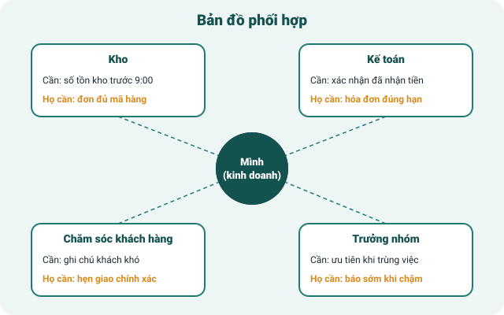

K8 · Làm việc nhóm và tôn trọng khác biệt › Bậc 3 Vững vàng
Phối hợp với đồng nghiệp khác bộ phận và nêu bất đồng tôn trọng
Bài này làm Tờ 6: Bản đồ phối hợp. Mẫu in.
1. Mục tiêu
- Lập bản đồ phối hợp: các đầu mối, điều bạn cần từ họ, điều họ cần từ bạn.
- Nêu một bất đồng bằng câu 3 phần: điều quan sát, lý do, đề xuất thử.
2. Khởi động truy xuất
- Tin báo sai sót gồm 3 ý nào?
- Bốn câu hỏi rút kinh nghiệm là gì?
Đáp án
- Việc gì sai; ảnh hưởng tới ai; bạn đang làm gì.
- Mình định làm gì? Thực tế ra sao? Vì sao khác? Lần sau làm gì?
Xem lại: Khi việc không như kế hoạch.
3. Giải thích
Phần lớn việc của bạn cần người khác làm trước hoặc làm tiếp. Người mới thường chỉ quen người cùng phòng. Việc dễ tắc ở chỗ giao nhau giữa các bộ phận.
Bản đồ phối hợp. Viết tên mình ở giữa. Xung quanh là các đầu mối bạn hay làm việc cùng. Với mỗi đầu mối, ghi hai dòng.

Dòng "Họ cần gì từ mình" quan trọng nhất. Làm tốt điều đó, họ sẽ sẵn lòng giúp bạn. Nếu chưa biết, hãy hỏi: "Em gửi thế nào thì anh làm tiếp dễ nhất ạ?"
Bàn giao bằng 3 dòng. Khi chuyển việc cho người khác, gửi:
Tin bàn giao
- Đã làmKết quả hiện có, để ở đâu.
- Còn lạiViệc người nhận cần làm, hạn.
- Lưu ýĐiều dễ sai, người cần liên hệ.
Nêu bất đồng tôn trọng. Đồng nghiệp khác tuổi, khác vùng miền, khác bộ phận sẽ có cách làm khác bạn. Bất đồng về cách làm là bình thường. Hãy nói về công việc, không nói về con người:
- Điều quan sát: "Em thấy tuần này có 3 đơn giao trễ vì thiếu mã hàng."
- Lý do: "Em nghĩ do mẫu đơn không bắt buộc ô mã hàng."
- Đề xuất thử: "Mình thử thêm ô bắt buộc trong 2 tuần, rồi xem lại được không anh?"
Câu "thử 2 tuần" giúp người kia dễ đồng ý. Họ không phải bỏ hẳn cách cũ.
Giúp người quá tải mà vẫn xong việc mình. Xem Tờ 1 trước. Nếu giúp làm trễ việc ô 1 của bạn, hãy hỏi quản lý trước khi nhận.
Khi bất đồng liên quan an toàn, quấy rối hay phân biệt đối xử, đó không còn là chuyện cách làm. Hãy báo theo kênh của công ty.
4. Ví dụ tại nơi làm việc Việt Nam
Tình huống giả định. Bảo, 23 tuổi, làm nhân viên kinh doanh được 2 tháng ở một công ty phân phối vật liệu xây dựng tại Vinh. Chú Hùng, 52 tuổi, phụ trách kho, quen nhận đơn qua điện thoại.
Bảo thấy đơn qua điện thoại hay sai số lượng. Bảo không nói "Cách của chú lỗi thời". Bảo nói:
"Chú ơi, tuần này cháu thấy 2 đơn giao sai số lượng. Cháu nghĩ do đọc qua điện thoại dễ nghe nhầm. Cháu thử gửi thêm ảnh đơn qua Zalo sau khi gọi, trong 2 tuần, chú xem có tiện không ạ?"
Chú Hùng đồng ý, và dặn thêm: "Gửi trước 9 giờ thì kho xếp xe kịp." Bảo ghi câu đó vào dòng "Họ cần" của kho trên Tờ 6.
Vì sao cách này tốt: Bảo giữ cuộc gọi chú quen, chỉ thêm một bước. Câu nói có số liệu và lời mời thử. Bảo còn học được điều kho cần.
5. Thực hành
Tình huống giả định. Bạn làm thiết kế đồ họa mới ở một công ty truyền thông tại TP.HCM. Chị Mai bên nội dung thường gửi chữ cho banner lúc 17:00, hạn đăng là 9:00 sáng hôm sau. Bạn hay phải làm tối. Bạn sắp nghỉ phép 3 ngày, cần bàn giao một bộ banner cho anh Khoa.
Viết câu nêu bất đồng với chị Mai. Viết tin bàn giao 3 dòng cho anh Khoa.
Gợi ý 1
Điều quan sát nên có số liệu: bao nhiêu lần, giờ nào.
Gợi ý 2
Hỏi chị Mai cần gì từ bạn. Có thể chị gửi muộn vì chờ duyệt.
Lời giải mẫu
Với chị Mai: "Chị ơi, 2 tuần nay em nhận chữ banner 4 lần sau 17:00, nên em làm tối mới kịp 9:00. Em nghĩ nếu có chữ trước 15:00 thì em kịp sửa 2 vòng. Mình thử 2 tuần chị gửi trước 15:00 được không ạ? Nếu chị cần chờ duyệt, chị gửi bản nháp trước cũng được."
Bàn giao cho anh Khoa:
- Đã làm: 3/5 banner khuyến mãi tháng 12, file trong thư mục chung "KM-T12".
- Còn lại: banner 4 và 5, đăng 9:00 thứ Năm.
- Lưu ý: logo đối tác phải dùng bản mới, chị Mai giữ file chữ.
(Tình huống là giả định.)
6. Tự kiểm tra
Chọn đáp án. Mỗi lựa chọn đều có giải thích.
Câu 1. Câu nào nêu bất đồng theo cách tập trung vào công việc?
-
Chưa đúng. Câu này nhắm vào người và cách làm của họ, dễ gây phòng thủ.
-
Đúng. Đúng. Có điều quan sát, có số liệu, có đề xuất thử trong thời gian ngắn.
-
Chưa đúng. Nói thay người khác, không có số liệu, không có đề xuất.
Câu 2. Dòng nào trên bản đồ phối hợp giúp đồng nghiệp sẵn lòng hỗ trợ bạn nhất?
-
Chưa đúng. Cần thiết, nhưng chỉ một chiều. Họ cũng cần điều gì đó từ bạn.
-
Đúng. Đúng. Làm tốt điều họ cần thì việc phối hợp hai chiều dễ hơn.
-
Chưa đúng. Biết chức danh có ích, nhưng không cho biết cách phối hợp.
Câu 3. Bạn sắp nghỉ phép và bàn giao việc. Tin bàn giao cần 3 dòng nào?
-
Đúng. Đúng. Người nhận biết kết quả ở đâu, phải làm gì, và điều dễ sai.
-
Chưa đúng. Đây là thông tin xin nghỉ, chưa giúp người nhận làm tiếp việc.
-
Chưa đúng. Thiếu hạn và lưu ý, người nhận dễ làm sai hoặc trễ.
Câu 4. Đồng nghiệp đang quá tải nhờ bạn giúp. Việc ô 1 của bạn hạn chiều nay. Bạn nên làm gì?
-
Chưa đúng. Có thể làm trễ việc quan trọng của bạn. Thức khuya cũng không bền.
-
Chưa đúng. Từ chối không kèm phương án làm mất cơ hội hỗ trợ nhau.
-
Đúng. Đúng. Bạn vẫn hỗ trợ, nhưng không làm hỏng việc đang gấp.
7. Phản tư
- Bộ phận nào bạn làm việc cùng mà chưa biết họ cần gì từ mình?
- Lần gần nhất bạn không đồng ý với ai về cách làm, bạn đã nói thế nào? Câu 3 phần sẽ ra sao?
8. Áp dụng thật
Trong 7 ngày tới, lập Tờ 6 với ít nhất 3 đầu mối. Hỏi trực tiếp một đầu mối câu: "Em gửi thế nào thì anh chị làm tiếp dễ nhất ạ?" Ghi câu trả lời vào tờ.
9. Siêu dữ liệu
| skill | K8 · Làm việc nhóm và tôn trọng khác biệt |
|---|---|
| level | Bậc 3 · Vững vàng |
| group | N3 |
| framework_map | CSfW: 2b Connect and work with others; 2c Recognise and utilise diverse perspectives; SkillsFuture CCS: Collaboration; Building Inclusivity; NACE: Teamwork; Equity and Inclusion; LifeComp: S3 Collaboration (chỉ dẫn chiếu) |
| updated | 2026-11-14 |
Hoàn thành bài
Đánh dấu đã học để site gợi ý lịch ôn sau 1, 3 và 7 ngày. Dữ liệu chỉ lưu trên máy của bạn.
Lịch ôn gợi ý: